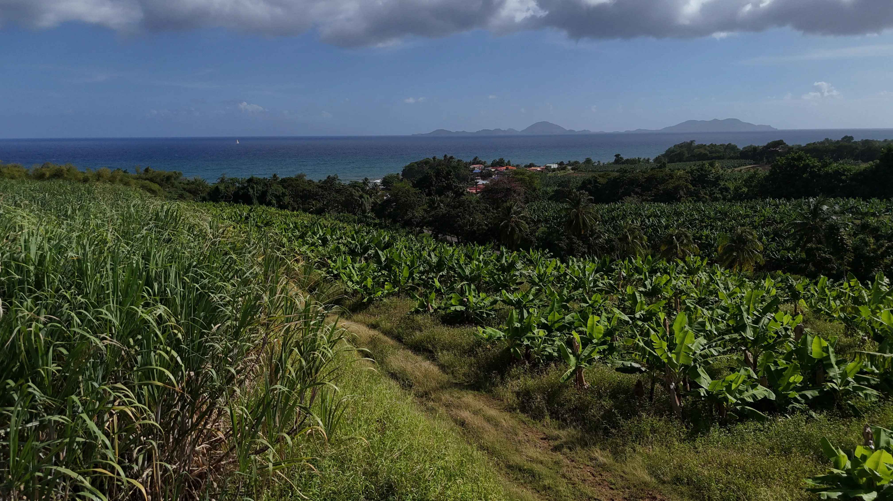

Agriculture de précision par drone aux Antilles : NDVI, NDRE et applications concrètes

L'agriculture en Guadeloupe et aux Antilles françaises fait face à des défis spécifiques : climat tropical humide, ravageurs endémiques, gestion de l'eau, pression foncière et transition vers des pratiques plus durables. Le drone multispectral apporte des réponses concrètes en permettant un diagnostic rapide et précis de l'état des cultures — parcelle par parcelle, plant par plant.
Qu'est-ce que l'agriculture de précision par drone ?
L'agriculture de précision consiste à adapter les interventions agricoles (irrigation, fertilisation, traitement phytosanitaire) en fonction des besoins réels de chaque zone d'une parcelle, plutôt que de traiter uniformément. Le drone équipé d'une caméra multispectrale capture des images dans des longueurs d'onde invisibles à l'œil nu (proche infrarouge, red edge) et permet de calculer des indices de végétation.
Les indices de végétation : NDVI, NDRE, NDWI
NDVI — Indice de végétation par différence normalisée
Le NDVI (Normalized Difference Vegetation Index) est l'indice le plus utilisé. Il mesure la quantité et la vigueur de la végétation. Un NDVI élevé (proche de 1) indique une végétation dense et saine. Un NDVI faible (proche de 0) révèle un sol nu, une végétation clairsemée ou des plants en souffrance. En Guadeloupe, le NDVI permet de repérer rapidement les zones de stress sur une bananerais ou un champ de canne à sucre.
NDRE — Indice de red edge
Le NDRE (Normalized Difference Red Edge) est plus sensible que le NDVI pour détecter les stades précoces de stress, notamment le stress azoté. Quand une plante commence à manquer d'azote, le NDRE le détecte avant que les symptômes ne soient visibles à l'œil. C'est un outil précieux pour ajuster la fertilisation au plus juste.
NDWI — Indice de stress hydrique
Le NDWI (Normalized Difference Water Index) mesure la teneur en eau de la végétation. En Guadeloupe, où l'alternance entre saison sèche (carême) et saison humide (hivernage) peut provoquer des épisodes de stress hydrique, le NDWI aide à piloter l'irrigation de façon ciblée et économe.
Applications concrètes en Guadeloupe
Banane
La banane est la principale culture d'exportation de la Guadeloupe. Le drone multispectral permet de surveiller l'état sanitaire des bananerais sur de grandes surfaces, de détecter les foyers de cercosporiose (maladie des raies noires) avant leur propagation et d'optimiser les apports en engrais. Le suivi régulier par drone réduit les traitements inutiles et améliore les rendements.
Canne à sucre
Le suivi par drone de la canne à sucre permet de mesurer la croissance parcelle par parcelle, d'identifier les zones sous-performantes et de planifier la récolte de manière optimale. Le NDVI combiné au NDWI donne une image précise de la maturité et du potentiel de chaque section.
Maraîchage et cultures vivrières
Pour les cultures maraîchères et vivrières (igname, dachine, patate douce, tomate, piment), le drone permet un comptage des plants, une détection des manques et un suivi de croissance. Les petites exploitations bénéficient d'une vision d'ensemble qu'elles n'avaient pas auparavant.
Suivi environnemental
Au-delà de l'agriculture pure, le drone multispectral est utilisé en Guadeloupe pour le suivi de la mangrove, la cartographie des zones humides, l'étude de la biodiversité végétale et le monitoring post-cyclone de la couverture forestière.
L'équipement utilisé par KanaloEye
Chez KanaloEye, nous utilisons le DJI Mavic 3 Multispectral (M3M) équipé de 4 capteurs multispectraux (vert, rouge, red edge, proche infrarouge) et d'un capteur RGB. Le module RTK embarqué assure un géoréférencement centimétrique des données, sans nécessiter de points d'appui au sol (GCP).
Les données brutes sont traitées par photogrammétrie (Agisoft Metashape) puis analysées dans des logiciels SIG (QGIS, Global Mapper) pour produire des cartes d'indices exploitables. Les livrables sont fournis en formats standards (GeoTIFF, Shapefile) compatibles avec vos outils métiers.
Combien ça coûte ?
Une mission d'agriculture de précision par drone en Guadeloupe démarre à partir de 500 €, selon la surface à couvrir et les livrables demandés. Le coût est rapidement amorti par les économies réalisées sur les intrants (eau, engrais, traitements) et l'amélioration des rendements.
Optimisez vos cultures avec le drone
Discutons de votre exploitation — devis personnalisé sous 24h.
Demander un devis →